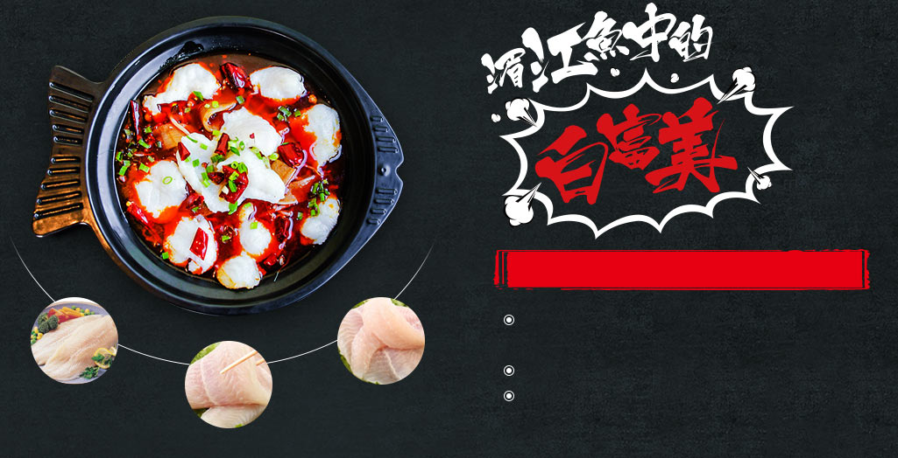
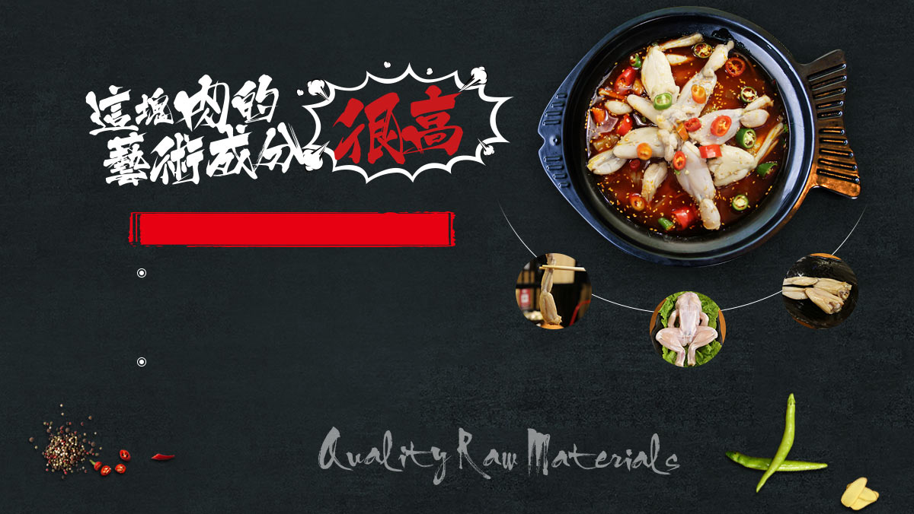

鲜美嫩弹无刺
葵中选用上等净白巴沙鱼，色泽越透亮净白品质越高
湄江鱼其肉质细腻、味道鲜美、营养丰富，含丰富蛋白质、
维生素A、矿物质(主要是钙)等营养元素 。
湄江鱼有补气、平咳作用，对体弱咳喘有一定疗效 。
湄江鱼还具有提神和防衰老等食疗功能，常食对治疗贫血、
早衰、营养不良、产后虚弱和神经衰弱等症会有一定辅助疗效。

滋补细嫩低脂
每百克牛蛙肉中含蛋白质19.9克、脂肪0.3 克
葵中牛蛙精心腌制后，根据肉之中各类蛋白质的不同特性，
利用核心技术恢复细胞内的水分，让细胞壁重获弹性，极大
保留了牛蛙肉质的鲜嫩与活性，绝非一般冷冻牛蛙可比，
口感Q弹、细嫩，达到活蛙现做的品质。
本成品牛蛙配送-简化烹制流程-秒懂秒会秒上手